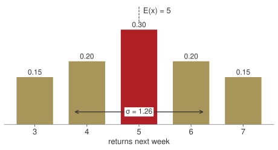
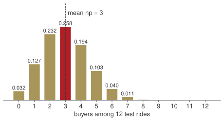
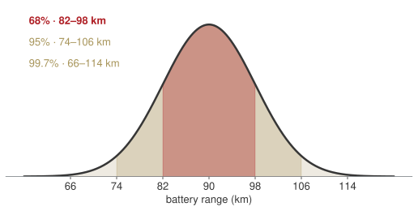
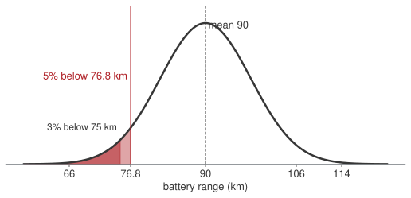
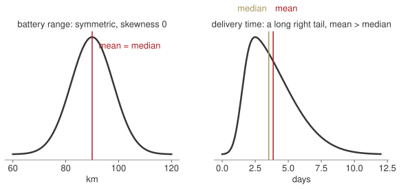
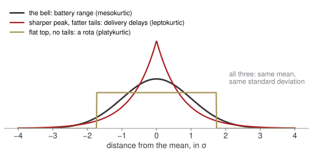
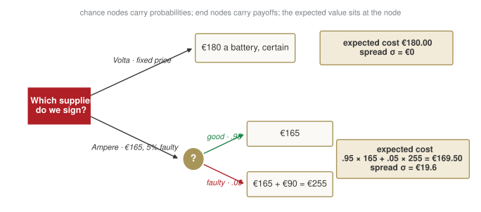

Week 7 · Monday 9 November 2026 · 10:00–13:00 · online
MBA03 Research & Quantitative Business Methods · European School of Economics, Florence
Block A“Or”, and count the ways“Or” adds the two shares and takes the overlap out once. Order matters: multiply down the tree. Order does not: divide by k!.
Block B“Given”, and Bayes“Given” means: look only at that row or column, and divide by its total. The evidence keeps the column that happened; read its shares.
Block CA number with its sharesNot reached on Thursday. It opens today, as block A: mean, variance, a random variable.
Homework 6Now, step by stepH1, H2 and the memo. H3 needs block C, so it moves to Homework 7.
Thursday you learnt to count and to condition. Today: first a number with its shares, then its shape, then a decision.
180 October customers: 110 bought a helmet (H), 75 a lock (L), 30 neither.
Universal set: the set of everything we are talking about, here the 180 customers.
Complement of H: the set of customers not in H, here the 180 - 110 = 70 without a helmet.
Intersection H \cap L: the set of customers in both, helmet and lock.
At least one is the complement of “neither”:
180 - 30 = 150
110 + 75 = 185 counts “both” twice:
150 = 110 + 75 - \text{both} \;\Rightarrow\; \text{both} = \textbf{35}
| helmet only | both | lock only | neither | total |
|---|---|---|---|---|
| 75 | 35 | 40 | 30 | 180 ✓ |
Divide every count by 180: a probability is a share of the universal set.
P(H \cup L) = P(H) + P(L) - P(H \cap L)
= \frac{110}{180} + \frac{75}{180} - \frac{35}{180} = .611 + .417 - .194 = \textbf{.833}
P(\text{neither}) = 1 - P(H \cup L) = 1 - .833 = \textbf{.167} \qquad \text{check: } \tfrac{30}{180} = .167
Reading. Five customers in six took at least one accessory; one in six took neither.
The slip: both = 110 + 75 - 180 = 5. Take the 30 out first; the subtraction is from “at least one”, not from the total.
The one question first: does swapping two models change the display?
A set of three, no order: swapping two is the same display. Combinations; cancel the 7! before multiplying.
\binom{10}{3} = \frac{10!}{3!\,7!} = \frac{10 \cdot 9 \cdot 8 \cdot \cancel{7!}}{3 \cdot 2 \cdot 1 \cdot \cancel{7!}}
= \frac{720}{6} = \textbf{120}
Lined up left to right: swapping two changes the display. Permutations.
P^{10}_{3} = \frac{10!}{7!} = 10 \cdot 9 \cdot 8 = \textbf{720}
Each set of three can be lined up in 3! = 6 ways: 120 \times 6 = 720.
120 different sets of three; 720 different arrangements of them. The 3! underneath is exactly what removes the order.
Celle sends 65%, 3% faulty. Ionix sends 35%, 8% faulty. 2,000 batteries.
| good | faulty | total | |
|---|---|---|---|
| Celle | 1,261 | 39 | 1,300 |
| Ionix | 644 | 56 | 700 |
| total | 1,905 | 95 | 2,000 |
Shares in, counts out. The counts are what make “a cell over a total” visible.
(b) Same cell, 39; two different totals underneath.
P(F \mid \text{Celle}) = \frac{39}{1{,}300} = \textbf{.03}
Celle’s row: how good is Celle.
P(\text{Celle} \mid F) = \frac{39}{95} = \textbf{.411}
The faulty column: who sent this faulty one.
(c) Compare the rows with each other and with the total:
| share faulty | |
|---|---|
| Celle | 39 / 1,300 = .03 |
| Ionix | 56 / 700 = .08 |
| overall | 95 / 2,000 = .0475 |
The rows differ: knowing the supplier changes the share of faulty batteries. Supplier and fault are dependent.
| supplier | prior share | × defect rate | = faulty, as a share of all | ÷ total faulty |
|---|---|---|---|---|
| Celle | .65 | .03 | .0195 | .0195 / .0475 = .411 |
| Ionix | .35 | .08 | .0280 | .0280 / .0475 = .589 |
| total | 1.00 | .0475 | 1.00 |
P(F) = .03 \times .65 + .08 \times .35 = .0195 + .0280 = .0475
P(\text{Ionix} \mid F) = \frac{P(F \mid \text{Ionix})\,P(\text{Ionix})}{P(F)} = \frac{.08 \times .35}{.0475} = \textbf{.589} \qquad \text{check: } \tfrac{56}{95} = .589
Before the evidence Ionix was .35; after, .59. The smaller supplier is the likelier culprit: a rate almost three times Celle’s outweighs a third of the volume.
To the founder · from Quality · the faulty battery on the bench
We received 2,000 batteries last quarter, 1,300 from Celle and 700 from Ionix. Of the 95 that failed, 39 came from Celle and 56 from Ionix. The battery on the bench is from Ionix with about a 59% chance, from Celle with 41%.
Ionix sends only a third of our batteries, but fails 8 times in 100 against Celle’s 3: nearly three times more often, which outweighs its smaller volume.
Recommendation: audit Ionix’s last quarter before the next order and ask them to explain the 8%. Switching now, on one battery, would be premature.
What we look for
A memo that answers “Celle, because they send more” has read the row, not the column.
| Wk | Date | What you can do by hand |
|---|---|---|
| 6 | 5 Nov · in person | count, condition, update ✓ |
| 7 | 9 Nov · online | a number with its shares; three shapes; decide with them |
| 8 | 16 Nov · online | how sure are we of a number: intervals, tests, one regression line |
| 9 | 23 Nov · online | several causes at once; a trend through time |
| 10 | 30 Nov · online | review; one last round of practice on paper |
Online, like the rest of the second half. Paper, a calculator, and the normal table — or NORM.S.DIST on your computer.
Everything in weeks 8–10 stands on today’s bell and on two words: mean and standard deviation.
Every technique today is here because an assessment asks for it. I will tell you which one, every time.
Arno Bikes, this month
The founder has four numbers she does not know. How many bikes come back under warranty next week. How many of Saturday’s test riders will buy. How far a battery really goes, so that she can print a range on the box. Which supplier to sign for next year’s batteries, when one of them is cheaper but less reliable.
First, each unknown number gets a mean and a spread. Then a shape — and a shape is something you can read a probability off.
Three shapes cover almost every number a firm does not know: a count out of n, a count at a rate, a measurement.
10:00 · 20’Homework 6H1, H2 and the memo, step by step.
10:20 → 12:45Four questions from the founderEach one: her question and your bet typed in the chat → the picture → one formula with a number → the sentence for the Board. Break at 11:15.
12:45 · 15’Take homeFour lines to remember, the four answers for the founder, the homework.
Next MondayOnlineHow sure are we of that number?
Bets are written, not said. Write a number before I compute; the surprise is where the learning is.
Block AHow many returns next week?mean and variance · a random variable · distributions
Block BHow many of Saturday’s riders buy?binomial · Poisson · one family
Block CWhat range do we promise?the normal · skewness and kurtosis
Block DWhich supplier do we sign?expected value to decide
| week | returns x | x - \bar{x} | (x - \bar{x})^{2} |
|---|---|---|---|
| 1 | 4 | −1 | 1 |
| 2 | 7 | 2 | 4 |
| 3 | 3 | −2 | 4 |
| 4 | 6 | 1 | 1 |
| 5 | 5 | 0 | 0 |
| sum | 25 | 0 | 10 |
The mean: the total, shared equally.
\bar{x} = \frac{\sum x}{n} = \frac{25}{5} = \textbf{5 returns a week}
The variance: the average squared distance from the mean. Why n - 1 underneath? The five distances always add to zero, so once four are known the fifth is fixed: only four of them are free. Dividing by 5 would make the spread look smaller than it is.
s^{2} = \frac{\sum (x - \bar{x})^{2}}{n - 1} = \frac{10}{4} = 2.5 \qquad s = \sqrt{2.5} = \textbf{1.58}
Reading. A typical week is 5 returns, give or take about 1.6. The deviations always sum to zero — a check, not a result.
Twenty weeks of history, turned into shares: in 3 of 20 weeks there were 3 returns, in 4 of 20 there were 4, and so on.
| returns x | share P(x) |
|---|---|
| 3 | .15 |
| 4 | .20 |
| 5 | .30 |
| 6 | .20 |
| 7 | .15 |
| sum | 1.00 |
A random variable is next week’s number, before we see it, with a share attached to each value it can take. The shares add up to 1.
The expected value is the mean of the five-row table with the shares as weights: each value, times how often it happens, added up.
E(x) = \sum x\,P(x)
= 3(.15) + 4(.20) + 5(.30) + 6(.20) + 7(.15)
= .45 + .80 + 1.50 + 1.20 + 1.05 = \textbf{5.0}
Reading. Expect 5 returns a week. No single week has exactly 5.0; over 50 weeks, about 250.
| returns x | share P(x) | distance x - \mu | squared (x - \mu)^{2} | weighted (x - \mu)^{2}\,P(x) |
|---|---|---|---|---|
| 3 | .15 | −2 | 4 | 4 × .15 = .60 |
| 4 | .20 | −1 | 1 | 1 × .20 = .20 |
| 5 | .30 | 0 | 0 | 0 × .30 = 0 |
| 6 | .20 | 1 | 1 | 1 × .20 = .20 |
| 7 | .15 | 2 | 4 | 4 × .15 = .60 |
| sum | 1.00 | 1.60 |
Same recipe as the five weeks: distance from the mean, squared, then averaged, with the shares as weights.
\sigma^{2} = \sum (x - \mu)^{2}\,P(x) = \textbf{1.60}
\sigma = \sqrt{1.60} = \textbf{1.26}
Reading. Expect 5 returns, give or take about 1.3.
Same two formulas as the five weeks: once with 1/n as the weight, once with the shares.

The table of shares, drawn: each value on the floor, its share as the height. That picture is the distribution of next week’s returns.
Two numbers summarise it: where it sits (E(x) = 5) and how wide it is (\sigma = 1.26).
Ask the picture, not the mean: a week with 7 returns is the top of the table, not a crisis; a week with 8 or more has not happened in twenty weeks.
Board sentence
Plan the workshop for five returns a week, give or take one or two. Seven is a normal bad week; eight would be news.
| word | in plain words | at Arno Bikes |
|---|---|---|
| random variable | a number we do not know yet, with its shares | next week’s returns |
| distribution | the full list of values and shares, or its picture | the bars from 3 to 7 |
| expected value E(x) | the long-run average of that number | 5 returns a week |
| standard deviation \sigma | how far a typical week sits from the average | 1.26 returns |
| parameter | the one or two numbers that pin a distribution down | mean 5, spread 1.26 |
Our table came from twenty weeks of history. From the next block on, the shares come from a formula instead — and the words stay exactly the same.
BinomialHow many of these n?Twelve test rides, each buys or not: how many buyers?
PoissonHow many in this interval?Helpline calls in an hour, returns in a week.
The normalThe bellBattery ranges piling up around 90 km; what range to print on the box.
Three ready-made tables of shares. Same five words, same E(x) and \sigma — blocks B and C, and then how to decide with them.
Block AHow many returns next week?mean and variance · a random variable · distributions
Block BHow many of Saturday’s riders buy?binomial · Poisson · one family
Block CWhat range do we promise?the normal · skewness and kurtosis
Block DWhich supplier do we sign?expected value to decide
Saturday: 12 test rides. From the CRM, one rider in four buys: p = .25, and each decides alone.
Bet before we compute
How many buyers is most likely? And the chance of exactly 3? Write both.
The binomial: a fixed number n of yes/no trials, the same p each time, independent.
P(x) = \binom{n}{x}\, p^{x}\, (1-p)^{n-x}

The shape for n = 12, p = .25: the bar at 3 is the tallest.
1. The ways to pick which 3 buy.
\binom{12}{3} = \frac{12 \cdot 11 \cdot 10}{3 \cdot 2 \cdot 1} = \frac{1320}{6} = 220
2. Those 3 buy. \;p^{3} = .25^{3} = .25 \times .25 \times .25 = .015625
3. The other 9 do not. \;(1-p)^{9} = .75^{9} = .0751
4. Multiply.
P(3) = 220 \times .015625 \times .0751 = \textbf{.258}
Reading. One Saturday in four ends with exactly three buyers.
The mean, with no table at all:
np = 12 \times .25 = \textbf{3 buyers}
\sigma = \sqrt{np(1-p)} = \sqrt{12 \times .25 \times .75} = \sqrt{2.25} = \textbf{1.5}
Nobody buys: x = 0, so \binom{12}{0} = 1, p^{0} = 1:
P(0) = .75^{12} = .032
At least one buys: 1 - P(0) = 1 - .032 = \textbf{.968}
Every binomial question is these four steps. “At least one” is always 1 minus “none”.
Push n to 40 and watch the bars become a bell. Drop p to .05: where does the peak go, and what shape is left?
Calls arrive at random, 3 an hour on average. One person answers; she steps out for half an hour.
Bet before we compute
Chance that nobody calls in that half hour? Write a share.
The Poisson: a count in an interval, constant rate, no upper limit. Write \mu = rate × interval before any number.
Half an hour: \mu = 3 \times \tfrac{1}{2} = 1.5.
P(x) = \frac{\mu^{x} e^{-\mu}}{x!} \;\Rightarrow\; P(0) = \frac{1.5^{0} e^{-1.5}}{0!} = e^{-1.5} = \textbf{.223}
In a full hour, \mu = 3:
P(0) = e^{-3} = .050
P(\ge 1) = 1 - .050 = \textbf{.950}
P(2) = \frac{3^{2} e^{-3}}{2!} = \frac{9 \times .0498}{2} = .224
Without the rescaling you would say 5% for the half hour. It is 22%: four times out. \mu first, always.
Binomial — how many of these n?
12 test rides, one in four buys.
Poisson — how many in this interval?
3 calls an hour; a half hour means \mu = 1.5.
Board sentence
Of twelve test rides we expect three sales, and nobody buying is a one-in-thirty Saturday. Leaving the helpline for half an hour, we miss at least one call three times out of four.
| from | to | when | in Arno Bikes words |
|---|---|---|---|
| Binomial | Poisson | many trials, each one rare | thousands of riders a week, a handful of complaints |
| Binomial | Normal | many trials, p not tiny | late orders among the 250 shipping this month |
| Poisson | Normal | a high rate | calls over a whole week, not one hour |
Twelve rides stay binomial. Count the late orders among 250, or calls over a whole week, and the bars smooth into a bell: with enough trials, every count behaves like a measurement.
Small n: count the ways. Rare events at a rate: Poisson. Large numbers of anything: the bell — block C teaches you to read it, and next week we use it on a count.
Block AHow many returns next week?mean and variance · a random variable · distributions
Block BHow many of Saturday’s riders buy?binomial · Poisson · one family
Block CWhat range do we promise?the normal · skewness and kurtosis
Block DWhich supplier do we sign?expected value to decide
Marketing wants a number on the box: “range X km”. Engineering measured 200 bikes on the same loop: 90 km on average, standard deviation 8 km.
Range is not a count. It is a measurement, any value on a line, and the bikes pile up into a bell: most near 90, fewer and fewer further out, symmetric.
Bet before we compute
Print 75 km: what share of riders will see less than the box promised? Write a share.
The normal, in words:
X \sim N(90,\, 8)

Count in units of \sigma from the centre:
A bike at 74 km is two σ below the mean — one in forty does that badly.
The same three numbers for every bell. That is why we measure distance in σ and not in km.
1Sketch and shadeDraw the bell, mark \mu, mark x, shade the area the question asks for.
2Standardisez = (x - \mu)/\sigma: how many σ from the centre, and on which side.
3TableThe standard normal table gives the area to the left of z. Or NORM.S.DIST(z, TRUE).
4SentenceTurn the area back into bikes, riders, euros.
One table serves every bell, because step 2 turns every bell into the same one: centre 0, width 1.

Step 1. The shaded area is the question: riders who see less than 75 km.
Step 2. Standardise. 75 km is 15 km below the mean of 90. In units of σ = 8:
z = \frac{x - \mu}{\sigma} = \frac{75 - 90}{8} = \frac{-15}{8} = -1.875 \approx \textbf{-1.88}
Reading. 75 km sits 1.88 standard deviations below the centre. The minus sign says “below”; the 1.88 says “how far”.
Same picture for a bike at 74 km from the previous slide: z = -2, two σ below. Now we can do any value, not only whole σ.
Step 3. The table splits z in two: the row is z to one decimal, the column adds the second. -1.88 = -1.8 + .08: row -1.8, column .08. The entry is the area to the left of z.
| z | .00 | .04 | .05 | .08 |
|---|---|---|---|---|
| −2.0 | .0228 | .0207 | .0202 | .0188 |
| −1.9 | .0287 | .0262 | .0256 | .0239 |
| −1.8 | .0359 | .0329 | .0322 | .0301 |
| −1.7 | .0446 | .0409 | .0401 | .0375 |
| −1.6 | .0548 | .0505 | .0495 | .0465 |
An excerpt of the standard normal table (areas to the left of z). In Excel: =NORM.S.DIST(-1.88, TRUE) → .0301.
P(X < 75) = P(z < -1.88) = \textbf{.030}
Step 4. Sentence. Print 75 km and three riders in a hundred will see less than the box promised.
Want the share above 75 km? The whole area is 1:
P(X > 75) = 1 - .030 = .970
The table only gives “to the left”. Everything else is 1 minus, or a difference of two lookups. The sketch tells you which.
Double \sigma to 16: what happens to the 75-km tail? Then flip the toggle and ask the app for the threshold that leaves 5% below.
The Board accepts 5% of riders seeing less than the box. What do we print?
Now the area is given and x is wanted: the four steps, backwards.
Table, backwards. Find .05 inside the table: between z = -1.64 (.0505) and -1.65 (.0495), so z = -1.645. Excel: =NORM.S.INV(0.05).
Undo the standardisation, solving z = (x - \mu)/\sigma for x:
x = \mu + z\,\sigma = 90 - 1.645 \times 8 = \textbf{76.8 km}
Print 76 km, a promise rounds down: the share below it is P(z < -1.75) = .040.
Forwards: x \to z \to area. Backwards: area \to z \to x.
| share who see less | |
|---|---|
| 85 km | 27% |
| 80 km | 11% |
| 76.8 km | 5% |
| 75 km | 3% |
Board sentence
Print 76 km. About one rider in twenty-five will see less, and every km we add to the box adds one or two complaints in a hundred.
The other tail. “The heaviest 5%”, “the slowest 5%”: 95% sits to the left, so z = +1.645 and x = \mu + 1.645\,\sigma. A promise on a time rounds up.

Battery range is symmetric: skewness zero, mean and median coincide.
Delivery time is not: most parcels take two days, a few take ten. A long right tail pulls the mean above the median: positive skewness.
Before you use the table, ask whether the data are a bell. A mean above the median says they are not.

Three shapes, the same mean and the same σ. Skewness asks whether the curve leans; kurtosis asks how much of it sits in the tails.
Same σ, different surprises. Fat tails mean the rare bad day is not as rare as the bell says.
Block AHow many returns next week?mean and variance · a random variable · distributions
Block BHow many of Saturday’s riders buy?binomial · Poisson · one family
Block CWhat range do we promise?the normal · skewness and kurtosis
Block DWhich supplier do we sign?expected value to decide
Arno Bikes buys 1,000 batteries a month. Two offers are on the table.
| Volta | Ampere | |
|---|---|---|
| price per battery | €180 | €165 |
| faulty on arrival | none, replaced by Volta | 5% |
| a faulty battery costs us | — | €90 to swap on the line |
Bet before we compute
Which contract, and how much does it save (or cost) per battery? Write a name and a number.
Volta is a certain number: €180, every battery.
Ampere is a random variable: block A’s table, two rows.
| what happens | share P(x) | cost x |
|---|---|---|
| the battery is good | .95 | €165 |
| the battery is faulty | .05 | €165 + €90 = €255 |
A cheaper price with a catch is not a price. It is a distribution, and you compare distributions by their mean — and then by their spread.

Read it left to right. At the square we choose; at the circle chance chooses, with its probabilities. The number written at a node is the expected value of everything to its right.
E(x) = \sum x\,P(x) = .95 \times 165 + .05 \times 255
= 156.75 + 12.75 = \textbf{€169.50 a battery}
Reading. On average Ampere costs €169.50 a battery: the €165 price plus €4.50 for the faulty ones. Against Volta’s €180: €10.50 cheaper a battery, €10,500 a month.
The spread, same recipe as block A:
\sigma^{2} = \sum (x - \mu)^{2} P(x) = .95\,(4.5)^{2} + .05\,(85.5)^{2}
= 19.24 + 365.51 = 384.75
\sigma = \sqrt{384.75} = \textbf{€19.6}
| Volta | Ampere | |
|---|---|---|
| expected cost | €180.00 | €169.50 |
| spread σ | €0 | €19.6 |
| worst battery | €180 | €255 |
Expected value picks Ampere. Spread picks Volta. A decision has two numbers, and the Board must hear both.
The expected value is the price you pay on average. The spread is the surprise you pay sometimes.
A thousand batteries a month. The faulty count is binomial: n = 1{,}000, p = .05.
np = 50 \text{ faulty}
\sigma = \sqrt{1{,}000 \times .05 \times .95} = 6.9
The monthly bill is €165,000 plus €90 per faulty battery: €169,500, give or take €620. The €10,500 saving is never at risk.
A rush order of ten. Same p, n = 10: the saving on ten batteries is €150. Two faulty batteries cost €180 and wipe it out, and two or more faulty happens
P(X \ge 2) = 1 - P(0) - P(1) = 1 - .599 - .315 = \textbf{.086}
one rush order in twelve.
Board sentence
Sign Ampere for the volume contract: €10.50 a battery cheaper on average, €10,500 a month, and on a thousand batteries the faults average out to about fifty, give or take seven. Keep Volta for rush orders of a few units, where one faulty battery in a box of ten is a problem the saving cannot pay for.
Expected value decides when the decision repeats. Spread decides when it does not.
AA number with its sharesA list: mean, and spread divided by n - 1. A random variable: the same two formulas weighted by the shares. The table of shares, drawn, is the distribution.
BName the shape before the formulaHow many of these n: binomial, mean np. How many in this interval: Poisson, \mu = rate × interval first. “At least one” is 1 − “none”.
CA normal question is an areaSketch, standardise, table, sentence. Backwards for a guarantee: area → z → x. Then ask whether the data are a bell: skewness and kurtosis.
DDecide on two numbersExpected value is the price you pay on average; spread is the surprise you pay sometimes. A repeated decision follows the mean; a one-off weighs the spread.
A number with its shares, three shapes, two numbers per decision. That is the whole of today.
AHow many returns next week?Five, give or take one or two. Seven is a normal bad week; eight would be news.
BHow many of Saturday’s riders buy?Three of twelve, give or take one and a half; nobody buying is a one-in-thirty Saturday. Leave the helpline half an hour and you miss a call three times in four.
CWhat range do we print?76 km. One rider in twenty-five sees less; every km added to the box adds one or two complaints in a hundred.
DWhich supplier do we sign?Ampere for volume: €10,500 a month cheaper, and on a thousand batteries the faults average out. Volta for rush orders, where one faulty battery in ten is a problem.
Next Monday, online: how sure are we of that number? 200 bikes gave 90 km. The true average is not 90. Week 8 says how far off it can be.
| question | formula | this morning |
|---|---|---|
| how many of these n | P(x) = \binom{n}{x} p^{x} (1-p)^{n-x}, \quad E = np, \quad \sigma = \sqrt{np(1-p)} | P(3) = .258, np = 3, \sigma = 1.5 |
| how many in this interval | P(x) = \dfrac{\mu^{x} e^{-\mu}}{x!}, \quad \mu = \text{rate} \times \text{interval} | \mu = 1.5, P(0) = .223 |
| a share under the bell | z = \dfrac{x - \mu}{\sigma}, table gives the area to the left | z = -1.88 \to .030 |
| the bell, backwards | x = \mu + z\,\sigma | 90 - 1.645 \times 8 = 76.8 |
| a list of numbers | \bar{x} = \dfrac{\sum x}{n}, \quad s^{2} = \dfrac{\sum (x - \bar{x})^{2}}{n - 1} | \bar{x} = 5, s = 1.58 |
| a number with its shares; a decision | E(x) = \sum x\,P(x), \quad \sigma^{2} = \sum (x-\mu)^{2} P(x) | 5.0 and 1.26; €169.50, \sigma = €19.6 |
Six lines. None of them was the hard part. The hard part was saying which one.
Five exercises on paper, at least one per block, plus a memo to the Board on the range to print. homework.md on the course site.
Due Sunday 15 November, 23:59 on Moodle. Corrected together at the start of next Monday.
The memo. 150–250 words to the Board: what range we print and why, two candidate numbers with the share of riders who will complain, one recommendation, and one line on what changes if the spread were 12 km.
If you want more: the probability chapters of any business statistics text. Not required.
← Course site · Research & Quantitative Business Methods · ESE Florence